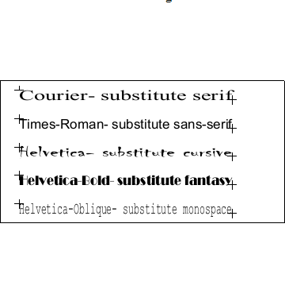

| Source image | Reference image |
|---|---|
 |
This tests ACI file generic font substition. The CGM file displayed on the left contains a fontlist with 5 different fonts and 5 restricted text elements which reference each of the 5 fonts respectively. The ACI file substitutes generic fonts for all of the 5 fonts. The image on the right shows how the CGM should appear if the substitutions works correctly. Note that appearance may vary as long as the substituted font is in the proper generic family.